Nos últimos anos, o Brasil tem enfrentado um crescimento significativo das enchentes e alagamentos em diversas regiões.
Esses eventos são causados tanto pelas fortes chuvas quanto pelo crescimento urbano desordenado, impermeabilização do solo e descarte inadequado de lixo.
O lixo acumulado entope bueiros, dificultando o escoamento da água e aumentando os riscos para a população.
Nosso projeto busca conscientizar os moradores e incentivar ações simples capazes de reduzir esses impactos.
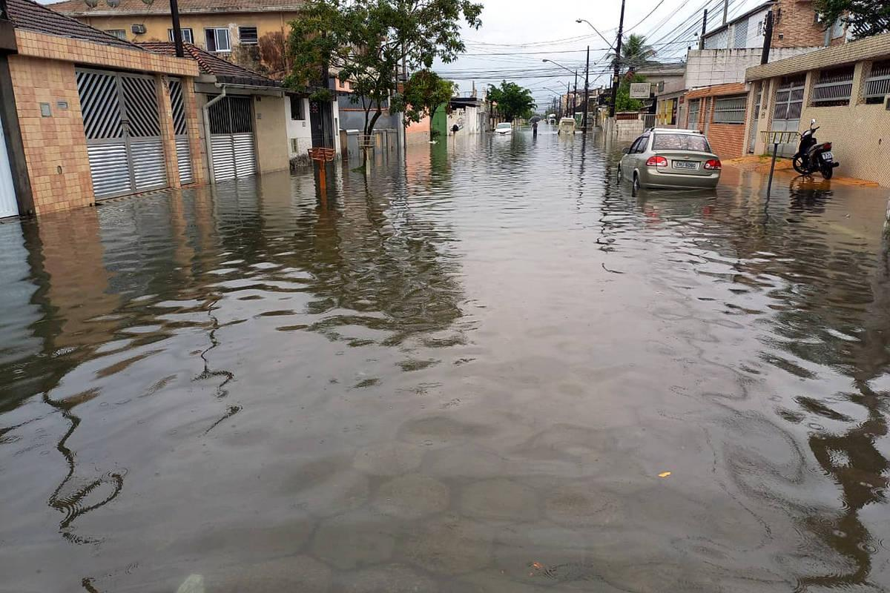
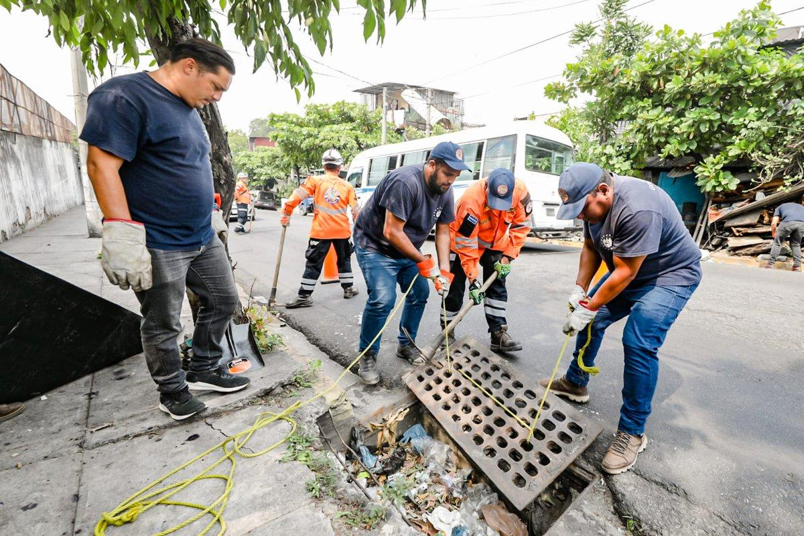
O projeto foi criado para reduzir pontos de alagamento através da união entre moradores.
A proposta incentiva a limpeza das ruas, preservação dos bueiros, descarte correto do lixo e melhorias simples na infraestrutura do bairro.
Além disso, busca fortalecer o espírito comunitário e tornar o bairro mais seguro para todos.
Incentivar o descarte adequado do lixo para evitar o entupimento dos bueiros.
Reduzir os pontos de alagamento através de ações simples e eficientes.
Envolver moradores nas decisões e melhorias do bairro.
Tornar o ambiente mais limpo, seguro e sustentável.
Realizar limpezas periódicas para melhorar o escoamento da água da chuva.
Organizar moradores para limpar ruas, calçadas e áreas críticas.
Instalar lixeiras em pontos estratégicos para diminuir o descarte irregular.
Estimular o uso de pisos que permitam a infiltração da água no solo.
Construção de pequenas cisternas para armazenar água da chuva.
Criar pequenos canais para facilitar a drenagem das ruas.
Criar grupos comunitários para avisos rápidos durante períodos de chuva intensa.
Promover palestras, campanhas e ações educativas para toda a comunidade.
A comunicação é uma das partes mais importantes do projeto. Conversar com vizinhos, compartilhar informações e criar grupos de alerta ajuda a prevenir riscos durante períodos de chuva intensa.
Com organização e participação da comunidade, todos podem agir com mais rapidez e eficiência diante de possíveis alagamentos.
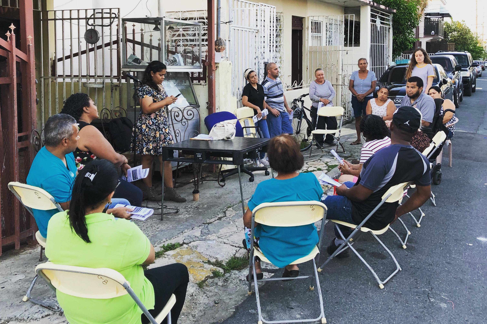
Publicar fotos e vídeos mostrando os resultados das ações.
Criar grupos para avisos rápidos e organização dos mutirões.
Espalhar cartazes em locais estratégicos do bairro.
Convidar vizinhos, amigos e familiares para participar.
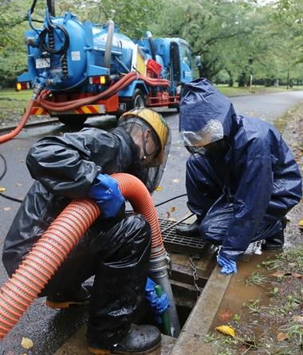
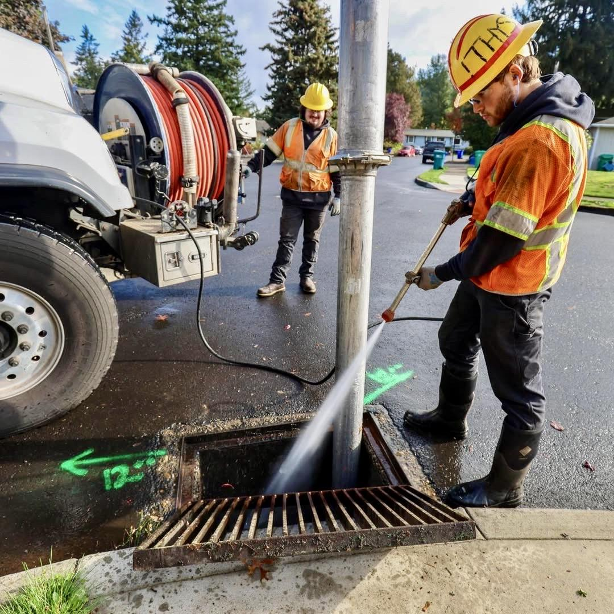
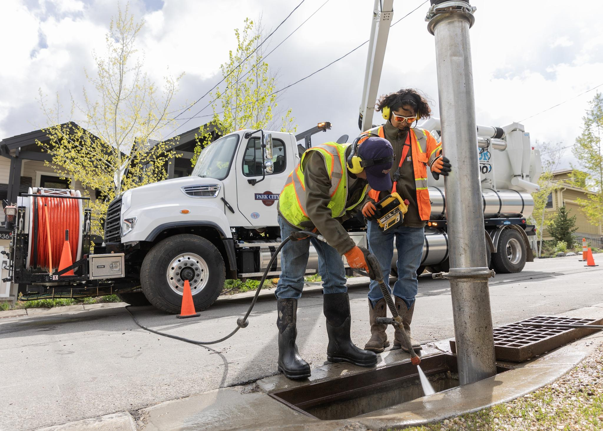
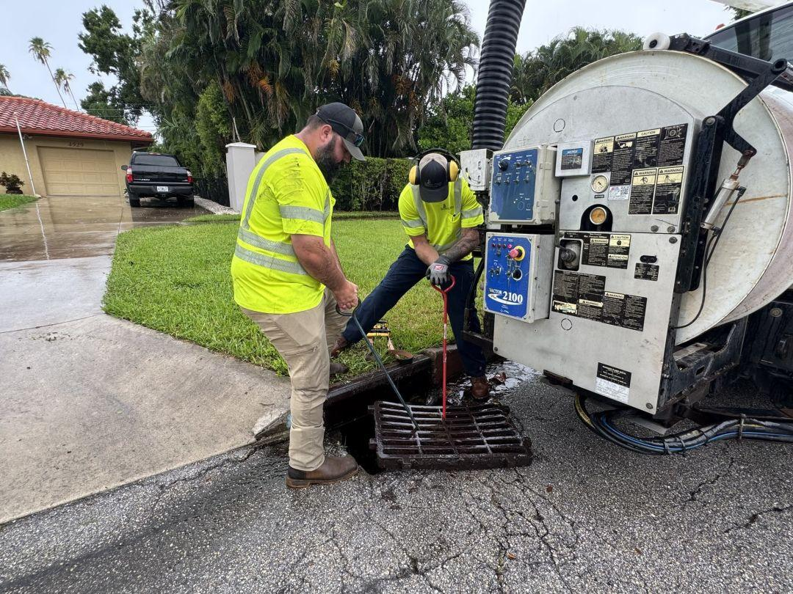
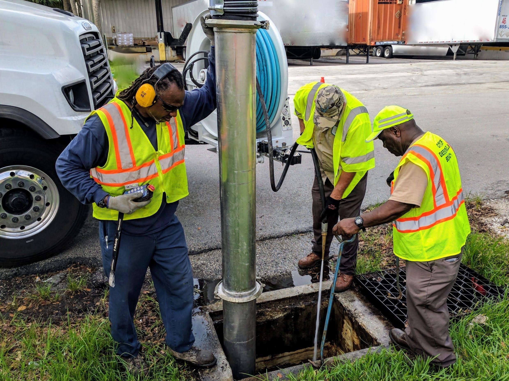
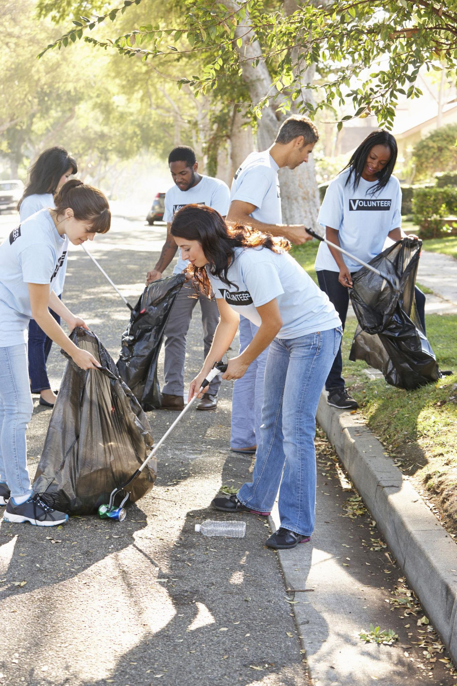
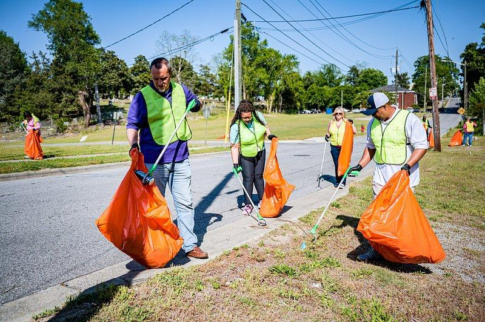
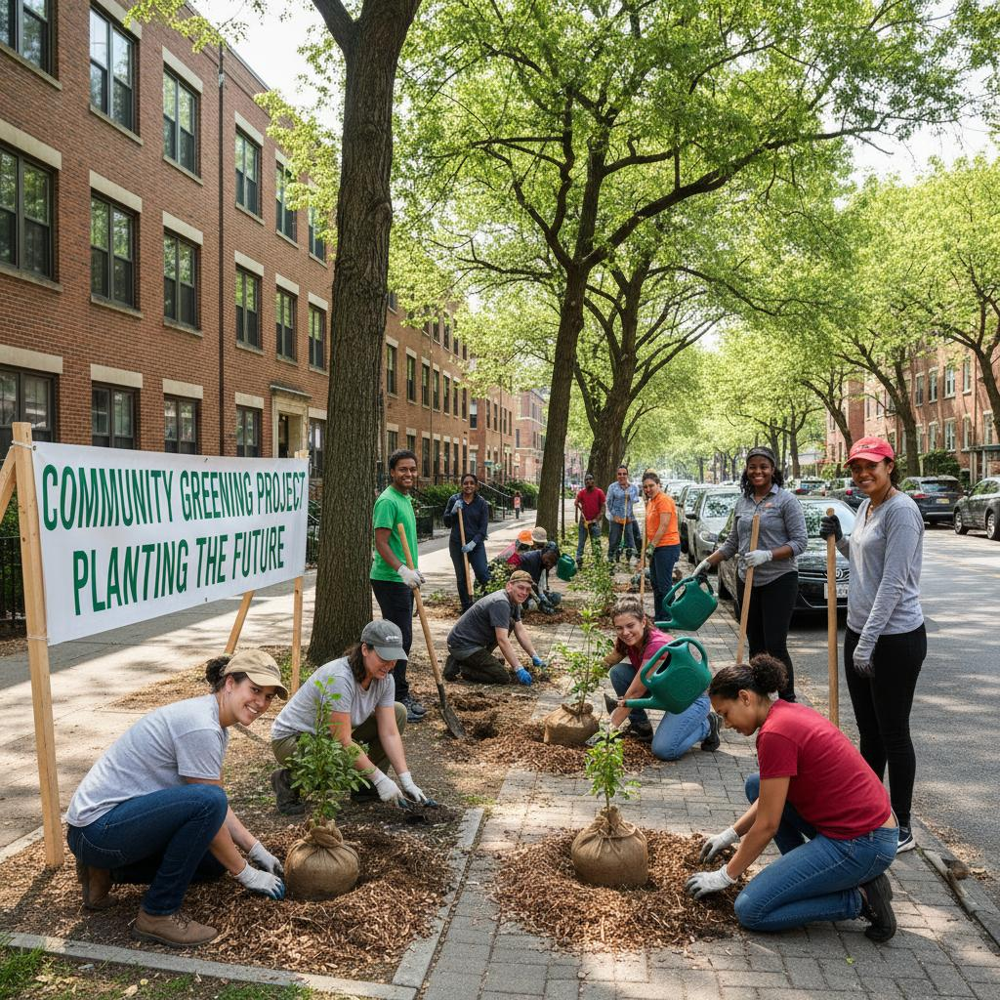
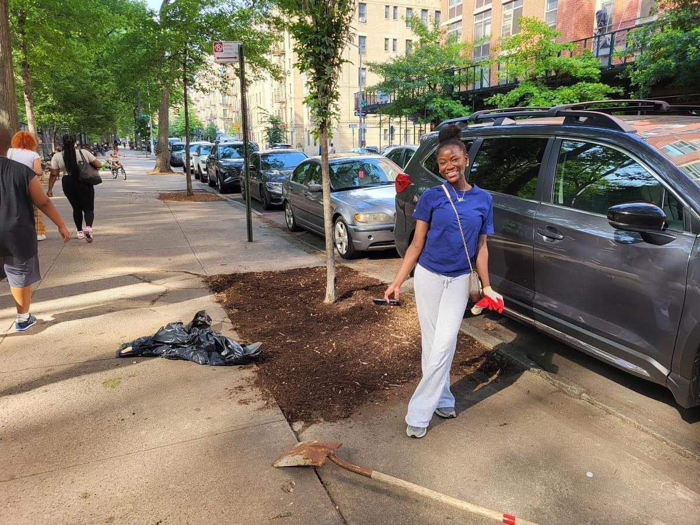
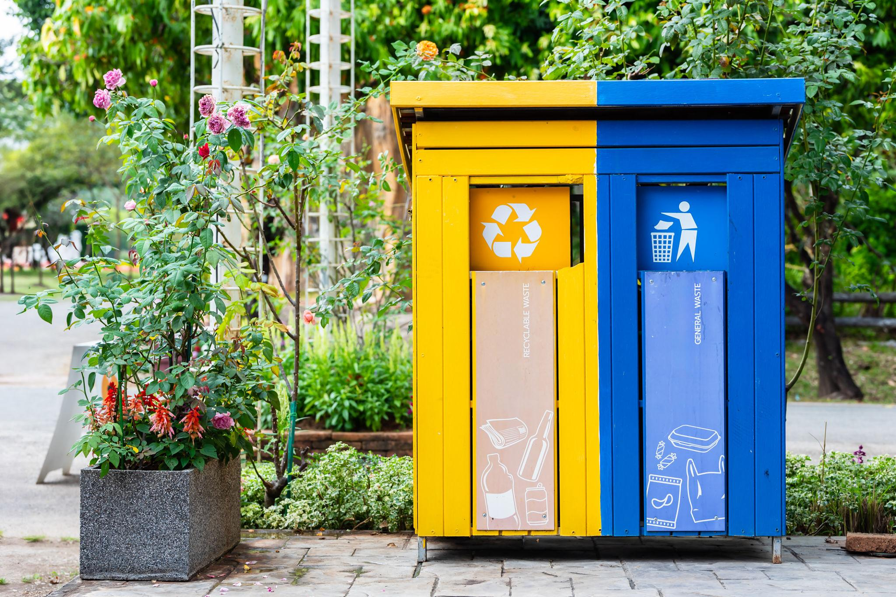
Pequenas ações, grandes mudanças. Participe do Projeto Bairro Sem Alagamento e ajude a construir um bairro mais seguro e sustentável.
Quero Participar